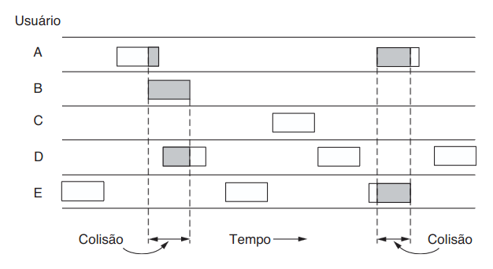
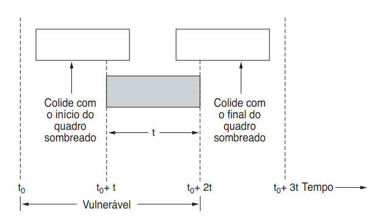
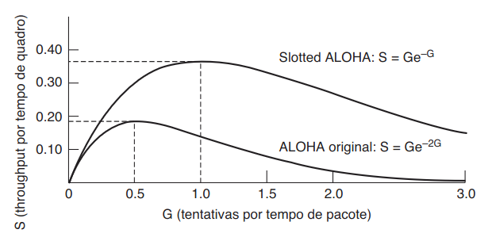
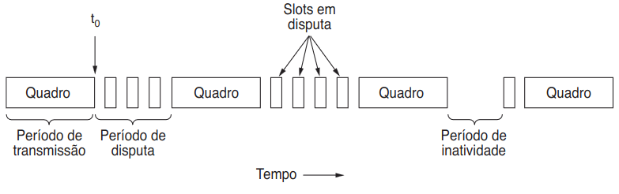
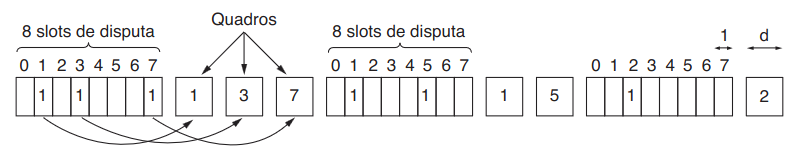
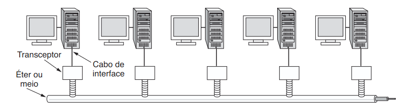
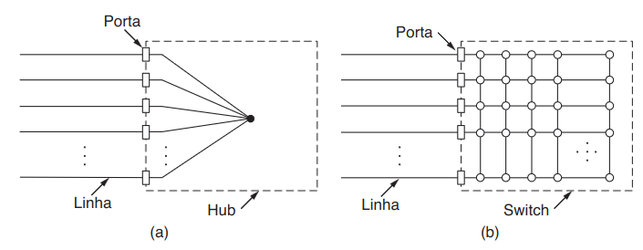
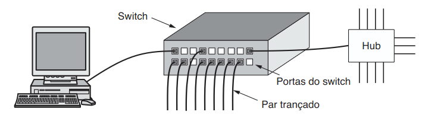
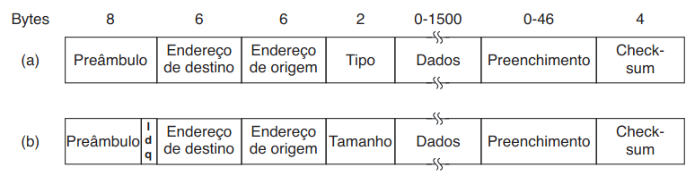

Professor: Gabriel Soares Baptista
Na aula passada, o foco foi transformar um fluxo bruto de bits em quadros e verificar sua integridade com mecanismos como CRC.
Hoje o problema muda um pouco.
Mesmo com quadros bem formados, ainda falta responder:
Imagine várias máquinas conectadas ao mesmo meio físico.
Cada uma pode ter um quadro pronto para enviar. Se duas transmitirem ao mesmo tempo, os sinais se sobrepõem.
A subcamada MAC existe para organizar o uso desse meio compartilhado.
A subcamada MAC (Medium Access Control) trata de perguntas como estas:
A aula anterior tratou do quadro como estrutura.
Esta aula trata do quadro competindo pelo meio.
Uma ideia aparentemente organizada seria dividir o canal em partes fixas.
Em redes de computadores, o tráfego costuma vir em rajadas. Por isso, reservar partes fixas do canal tende a desperdiçar capacidade.
Se dez usuários recebem partes fixas de um canal e apenas dois estão transmitindo agora, o que acontece com a capacidade reservada para os outros oito?
Ela fica ociosa. Por isso, redes de computadores costumam preferir acesso dinâmico ao meio.
No ALOHA, a estação transmite assim que tiver dados.
Se houver colisão:
É simples, mas gera muitas colisões.

No slotted ALOHA, a estação só pode transmitir no início de um slot.
Reduz a janela em que uma colisão pode destruir um quadro.

É por isso que a Internet fica mais lenta quando tem muita gente usando ao mesmo tempo?
Em parte, sim.

No CSMA (Carrier Sense Multiple Access), a estação escuta o meio antes de transmitir.
Isso reduz colisões desnecessárias em comparação com o ALOHA.
Se duas estações escutaram o meio, concluíram quase ao mesmo tempo que ele estava livre e começaram a transmitir juntas, como a rede percebe a colisão?
No CSMA/CD (Carrier Sense Multiple Access with Collision Detection), a estação:
backoff exponencial binário

Na Ethernet clássica, a estação precisava continuar transmitindo por tempo suficiente para ainda conseguir perceber uma colisão distante.
Se o quadro fosse curto demais, ela poderia terminar de transmitir antes de descobrir o problema.
64 bytes

Na Ethernet clássica, várias estações compartilhavam o mesmo barramento físico.

Na Ethernet moderna, cada host normalmente se conecta a uma porta de switch.
CSMA/CD é importantíssimo historicamente, mas muito menos relevante na prática atual das LANs comutadas.
| Dispositivo | Comportamento | Consequência |
|---|---|---|
| Hub | Repete sinais para todos | Um único domínio de colisão |
| Switch | Encaminha para a porta correta | Colisões isoladas ou inexistentes |

O switch substituiu o hub nas LANs modernas porque separa enlaces e encaminha quadros de forma seletiva.

O quadro Ethernet combina:
O FCS retoma diretamente a ideia de detecção de erros.

O endereço MAC identifica a interface de rede no enlace local.
70:85:c2:94:54:22
ff:ff:ff:ff:ff:ff
| Conceito | Pergunta que responde | Escopo |
|---|---|---|
| MAC | Para qual interface local este quadro vai? | Enlace local |
| IP | Para qual host lógico o pacote deve seguir? | Inter-redes |
MAC e IP não competem. Eles trabalham em camadas diferentes.
ip -br link
lo UNKNOWN 00:00:00:00:00:00 <LOOPBACK,UP,LOWER_UP>
enp5s0 UP 70:85:c2:94:54:22 <BROADCAST,MULTICAST,UP,LOWER_UP>
wlp4s0 DOWN a0:b3:39:33:65:6c <BROADCAST,MULTICAST>
ip addr show
2: enp5s0: <BROADCAST,MULTICAST,UP,LOWER_UP> mtu 1500
link/ether 70:85:c2:94:54:22 brd ff:ff:ff:ff:ff:ff
inet 192.168.100.33/24 brd 192.168.100.255
A mesma interface participa da camada de enlace e da camada de rede.
ip neigh
192.168.100.1 dev enp5s0 lladdr ac:8d:34:0f:a4:48 DELAY
fe80::1 dev enp5s0 lladdr ac:8d:34:0f:a4:48 router REACHABLE
Relação entre um endereço IP vizinho e o endereço MAC usado no enlace local.
ethtool enp5s0
Speed: 1000Mb/s
Duplex: Full
Port: Twisted Pair
Link detected: yes
1. Por que a subcamada MAC se torna importante em meios compartilhados?
2. Por que FDM e TDM podem desperdiçar capacidade em redes de computadores?
3. Diferencie ALOHA, slotted ALOHA, CSMA e CSMA/CD.
4. Por que a Ethernet clássica precisava de um tamanho mínimo de quadro?
5. Diferencie hub e switch.
6. Por que colisões praticamente desaparecem na Ethernet comutada full-duplex?
7. O que um endereço MAC identifica?
8. Qual a diferença entre MAC e IP?
Na próxima aula, avançaremos para Hardware de Interconexão (Switches) e VLANs.